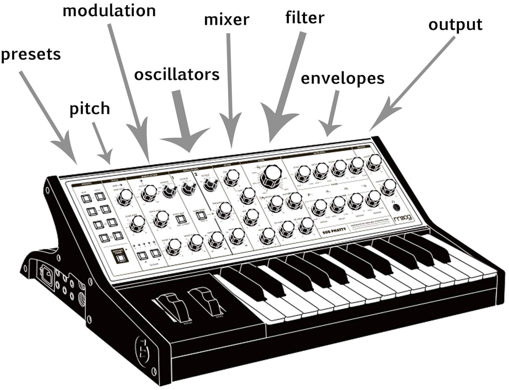

Web Audio
Day One Day Two Day ThreeWeb Audio: Day One
Synthesis and Sequencing
Learning Objectives
- Describe the basic building blocks of a synthesizer
- Synthesize and manipulate sounds with code
- Sequence musical events in the browser
- Visualize musical events with P5.js
Agenda
- Intros
- Setting up your environment
- Fundamentals of digital audio synthesis with Tone.js
- Sequencing note events with Tone.js
- Connecting our sequence to p5.js
- Create a polyrhythmic melody
What you will need
- Tone.js Library
- P5.js Library
- Tone.js Docs
- P5.js Docs
- Slide Deck
- A Code Editor
- Headphones
Pre-Configured Web IDE
with p5.js and Tone.js
Hello Tone
// Create a new Tone.Synth object and conect the synth to computer's audio output
const synth = new Tone.Synth().toDestination();
// Trigger note C4
synth.triggerAttack("C4");


Let's use P5 to add buttons.
We'll use one button to call Tone.start() and trigger the note onset
We'll use a second button to trigger the note release


Oscillator Types

Try changing the oscillator type on line 6
Filters

Creating a Tone.Filter
// Create a filter and set cutoff frequency and filter type
const filter = new Tone.Filter(500, "lowpass")
// Connect our synth to the filter
synth.chain(filter);
// Connect the filter to the output
filter.toDestination();
Try changing the filter frequency on line 15 from 500 to 2500 to 5000 to 15000
Then try changing the filter type on line 16 to "highpass "
Finally, add a line to the draw loop to control the frequency value with the mouseX position
Amplitude Envelope

Controlling amplitude in Tone.js
synth.triggerAttackRelease("C4", 0.1);
Try changing the attack, decay, and release times on lines 10-12
Then try changing the sustain time on line 30
Finally, add a conditional statement to the draw loop to control release time with right and left arrows
Defining multiple synth params
const synth = new Tone.Synth({
oscillator: {
type: "sawtooth "
},
envelope: {
attack: 1,
decay: 0.5,
release: 4
}
});
Tone.js includes different synthesis models
Each has different parameters
FM Synth
const fmSynth = new Tone.FMSynth({
harmonicity: 8,
modulationIndex: 10,
envelope: {
attack: 0.1,
decay: 0.5,
release: 4,
},
modulationEnvelope: {
attack: 0.3,
decay: 0.5,
release: 1,
}
});
Pluck Synth
const pluckSynth = new Tone.Synth({
oscillator: {
type: "sawtooth "
},
envelope: {
attack: 1,
release: 4
}
});
MonoSynth
const monoSynth = new Tone.Synth({
oscillator: {
type: "sawtooth "
},
envelope: {
attack: 1,
release: 4
}
});